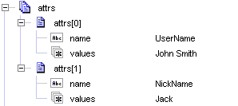
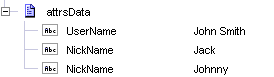

url | String Optional. URL of the directory server to connect to. For example ldap://servername:389. |
principal | String Optional. The principal for the directory server. |
credentials | String Optional. Credentials for the directory server. |
timeout | String Optional. Connection timeout in milliseconds. The default value is 30000 milliseconds. |
ldapEnv | Record Optional. Key/value parameters to be passed to JNDI to further define the connection environment. See your JNDI provider documentation or the Oracle JNDI documentation for more information about parameters you can pass to JNDI. |
close | String Flag that specifies whether to close the connection after the service finishes. Set to: |
dn | String The distinguished name of the new entry to add to the directory. |
attrs | Document List Optional. LDAP attributes and their corresponding values. If an attribute is specified more than once, it will be assigned multiple values. The following example shows how to specify a user name of John Smith and one nickname.  |
attrsData | Document Optional. LDAP attributes and their corresponding values. If an attribute is specified more than once, it will be assigned multiple values. The following example shows how to assign a user name of John Smith with two nicknames.  |